Lecture 5
- Introduction
- JavaScript
- Events
- Variables
querySelector- DOM Manipulation
- Intervals
- Local Storage
- APIs
Introduction
- So far, we’ve discussed how to build simple web pages using HTML and CSS, and how to use Git and GitHub in order to keep track of changes to our code and collaborate with others. We also familiarized ourselves with the Python programming language, started using Django to create web applications, and learned how to use Django models to store information in our sites.
- Today, we’ll introduce a new programming language: JavaScript.
JavaScript
Let’s begin by revisiting a diagram from a couple of lectures ago:
Recall that in most online interactions, we have a client/user that sends an HTTP Request to a server, which sends back an HTTP Response. All of the Python code we’ve written so far using Django has been running on a server. JavaScript will allow us to run code on the client side, meaning no interaction with the server is necessary while it’s running, allowing our websites to become much more interactive.
In order to add some JavaScript to our page, we can add a pair of <script> tags somewhere in our HTML page. We use <script> tags to signal to the browser that anything we write in between the two tags is JavaScript code we wish to execute when a user visits our site. Our first program might look something like this:
alert('Hello, world!');
The alert function in JavaScript displays a message to the user which they can then dismiss. To show where this would fit into an actual HTML document, here’s an example of a simple page with some JavaScript:
<!DOCTYPE html>
<html lang="en">
<head>
<title>Hello</title>
<script>
alert('Hello, world!');
</script>
</head>
<body>
<h1>Hello!</h1>
</body>
</html>
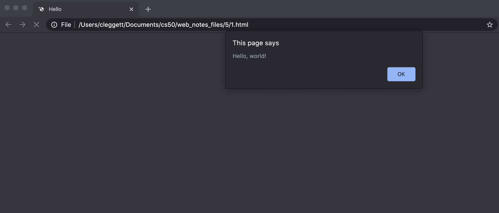
Events
One feature of JavaScript that makes it helpful for web programming is that it supports Event-Driven Programming.
Event-Driven Programming is a programming paradigm that centers around the detection of events, and actions that should be taken when an event is detected.
An event can be almost anything including a button being clicked, the cursor being moved, a response being typed, or a page being loaded. Just about everything a user does to interact with a web page can be thought of as an event. In JavaScript, we use Event Listeners that wait for certain events to occur, and then execute some code.
Let’s begin by turning our JavaScript from above into a function called hello:
function hello() {
alert('Hello, world!')
}
Now, let’s work on running this function whenever a button is clicked. To do this, we’ll create an HTML button in our page with an onclick attribute, which gives the browser instructions for what should happen when the button is clicked:
<button onclick="hello()">Click Here</button>
These changes allow us to wait to run parts of our JavaScript code until a certain event occurs.
Variables
JavaScript is a programming language just like Python, C, or any other language you’ve worked with before, meaning it has many of the same features as other languages including variables. There are three keywords we can use to assign values in JavaScript:
-
var: used to define a variable globally
var age = 20;
-
let: used to define a variable that is limited in scope to the current block such as a function or loop
let counter = 1;
-
const: used to define a value that will not change
const PI = 3.14;
For an example of how we can use a variable, let’s take a look at a page that keeps track of a counter:
<!DOCTYPE html>
<html lang="en">
<head>
<title>Count</title>
<script>
let counter = 0;
function count() {
counter++;
alert(counter);
}
</script>
</head>
<body>
<h1>Hello!</h1>
<button onclick="count()">Count</button>
</body>
</html>
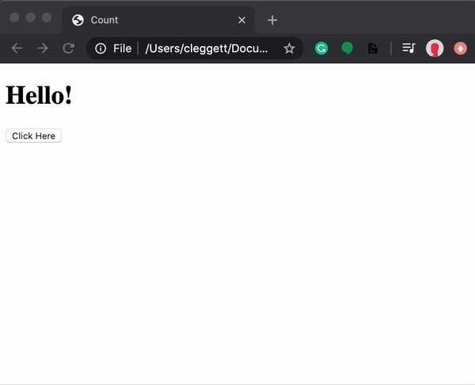
querySelector
In addition to allowing us to display messages through alerts, JavaScript also allows us to change elements on the page. In order to do this, we must first introduce a function called document.querySelector. This function searches for and returns elements of the DOM. For example, we would use:
let heading = document.querySelector('h1');
to extract a heading. Then, to manipulate the element we’ve recently found, we can change its innerHTML property:
heading.innerHTML = `Goodbye!`;
Just as in Python, we can also take advantage of conditions in JavaScript. For example, let’s say rather than always changing our header to Goodbye!, we wish to toggle back and forth between Hello! and Goodbye!. Our page might then look something like the one below. Notice that in JavaScript, we use === as a stronger comparison between two items which also checks that the objects are of the same type. We typically want to use === whenever possible.
<!DOCTYPE html>
<html lang="en">
<head>
<title>Count</title>
<script>
function hello() {
const header = document.querySelector('h1');
if (header.innerHTML === 'Hello!') {
header.innerHTML = 'Goodbye!';
}
else {
header.innerHTML = 'Hello!';
}
}
</script>
</head>
<body>
<h1>Hello!</h1>
<button onclick="hello()">Click Here</button>
</body>
</html>
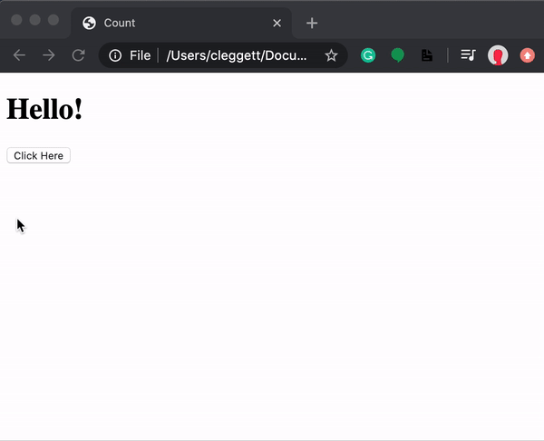
DOM Manipulation
Let’s use this idea of DOM manipulation to improve our counter page:
<!DOCTYPE html>
<html lang="en">
<head>
<title>Count</title>
<script>
let counter = 0;
function count() {
counter++;
document.querySelector('h1').innerHTML = counter;
}
</script>
</head>
<body>
<h1>0</h1>
<button onclick="count()">Count</button>
</body>
</html>
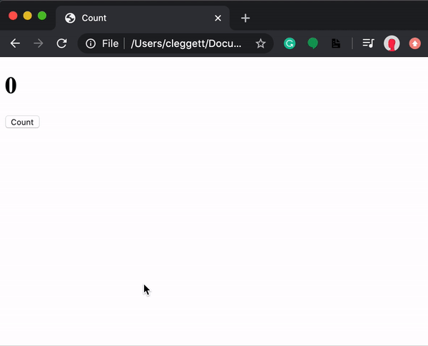
We can make this page even more interesting by displaying an alert every time the counter gets to a multiple of ten. In this alert, we’ll want to format a string to customize the message, which in JavaScript we can do using template literals. Template literals requre that there are backticks (`) around the entire expression and a $ and curly braces around any substitutions. For example, let’s change our count function
function count() {
counter++;
document.querySelector('h1').innerHTML = counter;
if (counter % 10 === 0) {
alert(`Count is now ${counter}`)
}
}
Now, let’s look at some ways in which we can improve the design of this page. First, just as we try to avoid in-line styling with CSS, we want to avoid in-line JavaScript as much as possible. We can do this in our counter example by adding a line of script that changes the onclick attribute of a button on the page, and removing the onclick attribute from within the button tag.
document.querySelector('button').onclick = count;
One thing to notice about what we’ve just done is that we’re not calling the count function by adding parentheses afterward, but instead just naming the function. This specifies that we only wish to call this function when the button is clicked. This works because, like Python, JavaScript supports functional programming, so functions can be treated as values themselves.
The above change alone is not enough though, as we can see by inspecting the page and looking at our browser’s console:
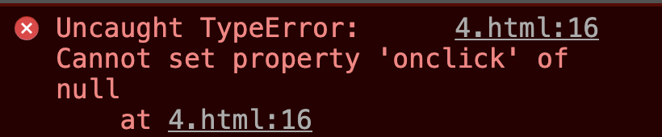
This error came up because when JavaScript searched for an element using document.querySelector('button'), it didn’t find anything. This is because it takes a small bit of time for the page to load, and our JavaScript code ran before the button had been rendered. To account for this, we can specify that code will run only after the page has loaded using the addEventListener function. This function takes in two arguments:
- An event to listen for (eg:
'click') - A function to run when the event is detected (eg:
hellofrom above)
We can use the function to only run the code once all content has loaded:
document.addEventListener('DOMContentLoaded', function() {
// Some code here
});
In the example above, we’ve used an anonymous function, which is a function that is never given a name. Putting all of this together, our JavaScript now looks like this:
let counter = 0;
function count() {
counter++;
document.querySelector('h1').innerHTML = counter;
if (counter % 10 === 0) {
alert(`Count is now ${counter}`)
}
}
document.addEventListener('DOMContentLoaded', function() {
document.querySelector('button').onclick = count;
});
Another way that we can improve our design is by moving our JavaScript into a separate file. The way we do this is very similar to how we put our CSS in a separate file for styling:
- Write all of your JavaScript code in a separate file ending in
.js, maybeindex.js. - Add a
srcattribute to the<script>tag that points to this new file.
For our counter page, we could have a file called counter.html that looks like this:
<!DOCTYPE html>
<html lang="en">
<head>
<title>Count</title>
<script src="counter.js"></script>
</head>
<body>
<h1>0</h1>
<button>Count</button>
</body>
</html>
And a file called counter.js that looks like this:
let counter = 0;
function count() {
counter++;
document.querySelector('h1').innerHTML = counter;
if (counter % 10 === 0) {
alert(`Count is now ${counter}`)
}
}
document.addEventListener('DOMContentLoaded', function() {
document.querySelector('button').onclick = count;
});
Having JavaScript in a separate file is useful for a number of reasons:
- Visual appeal: Our individual HTML and JavaScript files become more readable.
- Access among HTML files: Now we can have multiple HTML files that all share the same JavaScript.
- Collaboration: We can now easily have one person work on the JavaScript while another works on HTML.
- Importing: We are able to import JavaScript libraries that other people have already written. For example Bootstrap has their own JavaScript library you can include to make your site more interactive.
Let’s get started on another example of a page that can be a bit more interactive. Below, we’ll create a page where a user can type in their name to get a custom greeting.
<!DOCTYPE html>
<html lang="en">
<head>
<title>Hello</title>
<script>
document.addEventListener('DOMContentLoaded', function() {
document.querySelector('form').onsubmit = function() {
const name = document.querySelector('#name').value;
alert(`Hello, ${name}`);
};
});
</script>
</head>
<body>
<form>
<input autofocus id="name" placeholder="Name" type="text">
<input type="submit">
</form>
</body>
</html>
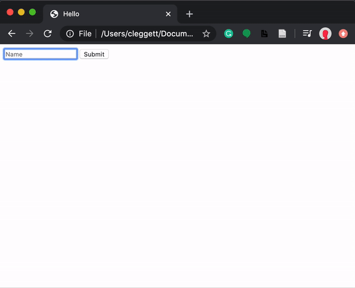
Some notes about the page above:
- We use the
autofocusfield in thenameinput to indicate that the cursor should be set inside that input as soon as the page is loaded. - We use
#nameinside ofdocument.querySelectorto find an element with anidofname. We can use all the same selectors in this function as we could in CSS. - We use the
valueattribute of an input field to find what is currently typed in.
We can do more than just add HTML to our page using JavaScript, we can also change the styling of a page! In the page below, we use buttons to change the color of our heading.
<!DOCTYPE html>
<html lang="en">
<head>
<title>Colors</title>
<script>
document.addEventListener('DOMContentLoaded', function() {
document.querySelectorAll('button').forEach(function(button) {
button.onclick = function() {
document.querySelector("#hello").style.color = button.dataset.color;
}
});
});
</script>
</head>
<body>
<h1 id="hello">Hello</h1>
<button data-color="red">Red</button>
<button data-color="blue">Blue</button>
<button data-color="green">Green</button>
</body>
</html>
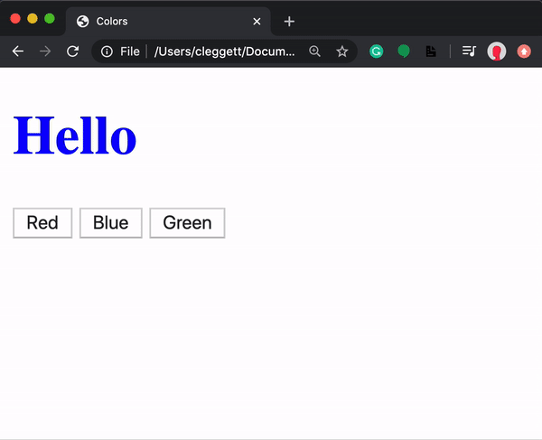
Some notes on the page above:
- We change the style of an element using the
style.SOMETHINGattribute. - We use the
data-SOMETHINGattribute to assign data to an HTML element. We can later access that data in JavaScript using the element’sdatasetproperty. - We use the
querySelectorAllfunction to get an Node List (similar to a Python list or a JavaScript array) with all elements that match the query. - The forEach function in JavaScript takes in another function, and applies that function to each element in a list or array.
JavaScript Console
The console is a useful tool for testing out small bits of code and debugging. You can write and run JavaScript code in the console, which can be found by inspecting element in your web browser and then clicking console. (The exact process may change frome browser to browser.) One useful tool for debugging is printing to the console, which you can do using the console.log function. For example, in the colors.html page above, I can add the following line:
console.log(document.querySelectorAll('button'));
Which gives us this in the console:
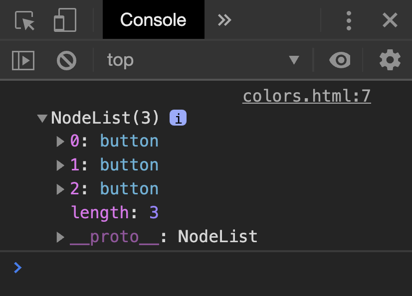
Arrow Functions
In addition to the traditional function notation we’ve seen already, JavaScript now gives us the ability to use Arrow Functions where we have an input (or parentheses when there’s no input) followed by => followed by some code to be run. For example, we can alter our script above to use an anonymous arrow function:
document.addEventListener('DOMContentLoaded', () => {
document.querySelectorAll('button').forEach(button => {
button.onclick = () => {
document.querySelector("#hello").style.color = button.dataset.color;
}
});
});
We can also have named functions that use arrows, as in this rewriting of the count function:
count = () => {
counter++;
document.querySelector('h1').innerHTML = counter;
if (counter % 10 === 0) {
alert(`Count is now ${counter}`)
}
}
To get an idea about some other events we can use, let’s see how we can implement our color switcher using a dropdown menu instead of three separate buttons. We can detect changes in a select element using the onchange attribute. In JavaScript, this is a keyword that changes based on the context in which it’s used. In the case of an event handler, this refers to the object that triggered the event.
<!DOCTYPE html>
<html lang="en">
<head>
<title>Colors</title>
<script>
document.addEventListener('DOMContentLoaded', function() {
document.querySelector('select').onchange = function() {
document.querySelector('#hello').style.color = this.value;
}
});
</script>
</head>
<body>
<h1 id="hello">Hello</h1>
<select>
<option value="black">Black</option>
<option value="red">Red</option>
<option value="blue">Blue</option>
<option value="green">Green</option>
</select>
</body>
</html>
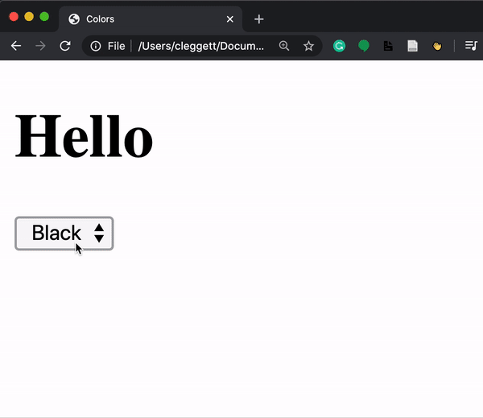
There are many other events we can detect in JavaScript including the common ones below:
onclickonmouseoveronkeydownonkeyuponloadonblur- …
TODO List
To put together a few of the things we’ve learned in this lecture, let’s work on making a TODO list entirely in JavaScript. We’ll start by writing the HTML layout of the page. Notice below how we leave space for an unorderd list, but we dont yet add anything to it. Also notice that we add a link to tasks.js where we’ll write our JavaScript.
<!DOCTYPE html>
<html lang="en">
<head>
<title>Tasks</title>
<script src="tasks.js"></script>
</head>
<body>
<h1>Tasks</h1>
<ul id="tasks"></ul>
<form>
<input id="task" placeholder = "New Task" type="text">
<input id="submit" type="submit">
</form>
</body>
</html>
Now, here’s our code which we can keep in tasks.js. A few notes on what you’ll see below:
- This code is slightly different from the code in lecture. Here, we only query for our submit button and input task field once in the beginning and store those two values in the variables
submitandnewTask. - We can enable/disable a button by setting its
disabledattribute tofalse/true. - In JavaScript, we use
.lengthto find the length of objects such as strings and arrays. - At the end of the script, we add the line
return false. This prevents the default submission of the form which involves either reloading the current page or redirecting to a new one. - In JavaScript, we can create HTML elements using the createElement function. We can then add those elements to the DOM using the
appendfunction.
// Wait for page to load
document.addEventListener('DOMContentLoaded', function() {
// Select the submit button and input to be used later
const submit = document.querySelector('#submit');
const newTask = document.querySelector('#task');
// Disable submit button by default:
submit.disabled = true;
// Listen for input to be typed into the input field
newTask.onkeyup = () => {
if (newTask.value.length > 0) {
submit.disabled = false;
}
else {
submit.disabled = true;
}
}
// Listen for submission of form
document.querySelector('form').onsubmit = () => {
// Find the task the user just submitted
const task = newTask.value;
// Create a list item for the new task and add the task to it
const li = document.createElement('li');
li.innerHTML = task;
// Add new element to our unordered list:
document.querySelector('#tasks').append(li);
// Clear out input field:
newTask.value = '';
// Disable the submit button again:
submit.disabled = true;
// Stop form from submitting
return false;
}
});
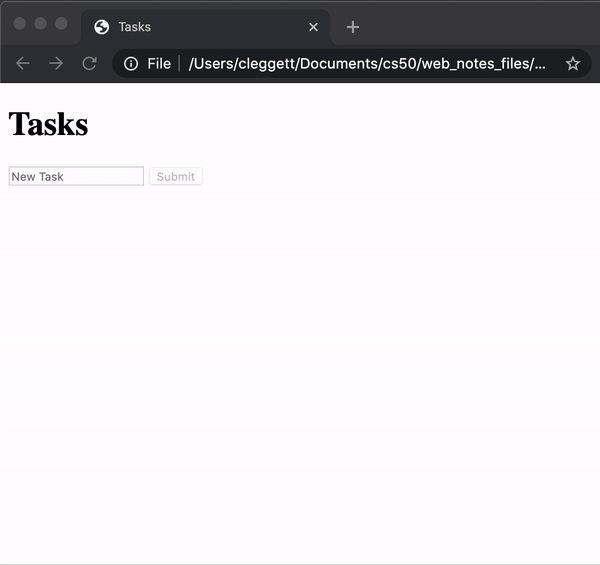
Intervals
In addition to specifying that functions run when an event is triggered, we can also set functions to run after a set amount of time. For example, let’s return to our counter page’s script, and add an interval so even if the user doesn’t click anything, the counter increments every second. To do this, we use the setInterval function, which takes as argument a function to be run, and a time (in milliseconds) between function runs.
let counter = 0;
function count() {
counter++;
document.querySelector('h1').innerHTML = counter;
}
document.addEventListener('DOMContentLoaded', function() {
document.querySelector('button').onclick = count;
setInterval(count, 1000);
});
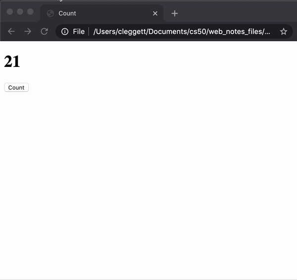
Local Storage
One thing to notice about all of our sites so far is that every time we reload the page, all of our information is lost. The heading color goes back to black, the counter goes back to 0, and all of the tasks are erased. Sometimes this is what we intend, but other time’s we’ll want to be able to store information that we can use when a user returns to the site.
One way we can do this is by using Local Storage, or storing information on the user’s web browser that we can access later. This information is stored as a set of key-value pairs, almost like a Python dictionary. In order to use local storage, we’ll employ two key functions:
-
localStorage.getItem(key): This function searches for an entry in local storage with a given key, and returns the value associated with that key. -
localStorage.setItem(key, value): This function sets and entry in local storage, associating the key with a new value.
Let’s look at how we can use these new functions to update our counter! In the code below,
// Check if there is already a value in local storage
if (!localStorage.getItem('counter')) {
// If not, set the counter to 0 in local storage
localStorage.setItem('counter', 0);
}
function count() {
// Retrieve counter value from local storage
let counter = localStorage.getItem('counter');
// update counter
counter++;
document.querySelector('h1').innerHTML = counter;
// Store counter in local storage
localStorage.setItem('counter', counter);
}
document.addEventListener('DOMContentLoaded', function() {
// Set heading to the current value inside local storage
document.querySelector('h1').innerHTML = localStorage.getItem('counter');
document.querySelector('button').onclick = count;
});
APIs
JavaScript Objects
A JavaScript Object is very similar to a Python dictionary, as it allows us to store key-value pairs. For example, I could create a JavaScript Object representing Harry Potter:
let person = {
first: 'Harry',
last: 'Potter'
};
I can then access or change parts of this object using either bracket or dot notation:
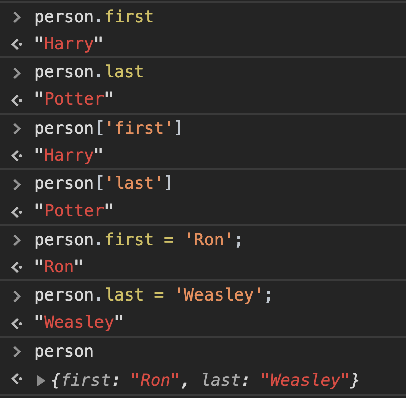
One way in which JavaScript Objects are really useful is in transferring data from one site to another, particularly when using APIs
An API, or Application Programming Interface, is a structured form communication between two different applications.
For example, we may want our application to get information from Google Maps, Amazon, or some weather service. We can do this by making calls to a service’s API, which will return structured data to us, often in JSON (JavaScript Object Notation) form. For example, a flight in JSON form might look like this:
{
"origin": "New York",
"destination": "London",
"duration": 415
}
The values within a JSON do not have to just be strings and numbers as in the example above. We can also store lists, or even other JavaScript Objects:
{
"origin": {
"city": "New York",
"code": "JFK"
},
"destination": {
"city": "London",
"code": "LHR"
},
"duration": 415
}
Currency Exchange
To show how we can use APIs in our applications, let’s work on building an application where we can find exchange rates between two currencies. Throughout the exercise, we’ll be using the European Central Bank’s Exchange Rate API. By visiting their website, you’ll see the API’s documentation, which is generally a good place to start when you wish to use an API. We can test this api by visiting the URL: https://api.exchangeratesapi.io/latest?base=USD. When you visit this page, you’ll see the exchange rate between the U.S. Dollar and many other currencies, written in JSON form. You can also change the GET parameter in the URL from USD to any other currency code to change the rates you get.
Let’s take a look at how to implement this API into an application by creating a new HTML file called currency.html and link it to a JavaScript file but leave the body empty:
<!DOCTYPE html>
<html lang="en">
<head>
<title>Currency Exchange</title>
<script src="currency.js"></script>
</head>
<body></body>
</html>
Now, we’ll use something called AJAX, or Asynchronous JavaScript And XML, which allows us to access information from external pages even after our page has loaded. In order to do this, we’ll use the fetch function which will allow us to send an HTTP request. The fetch function returns a promise. We won’t talk about the details of what a promise is here, but we can think of it as a value that will come through at some point, but not necessarily right away. We deal with promises by giving them a .then attribute describing what should be done when we get a response. The code snippet below will log our response to the console.
document.addEventListener('DOMContentLoaded', function() {
// Send a GET request to the URL
fetch('https://api.exchangeratesapi.io/latest?base=USD')
// Put response into json form
.then(response => response.json())
.then(data => {
// Log data to the console
console.log(data);
});
});
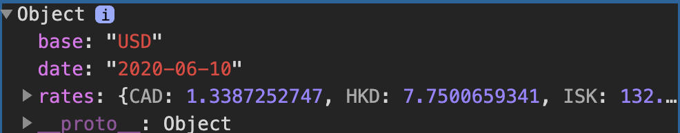
One important point about the above code is that the argument of .then is always a function. Although it seems we are creating the variables response and and data, those variables are just the parameters of two anonymous functions.
Rather than simply logging this data, we can use JavaScript to display a message to the screen, as in the code below:
document.addEventListener('DOMContentLoaded', function() {
// Send a GET request to the URL
fetch('https://api.exchangeratesapi.io/latest?base=USD')
// Put response into json form
.then(response => response.json())
.then(data => {
// Get rate from data
const rate = data.rates.EUR;
// Display message on the screen
document.querySelector('body').innerHTML = `1 USD is equal to ${rate.toFixed(3)} EUR.`;
});
});
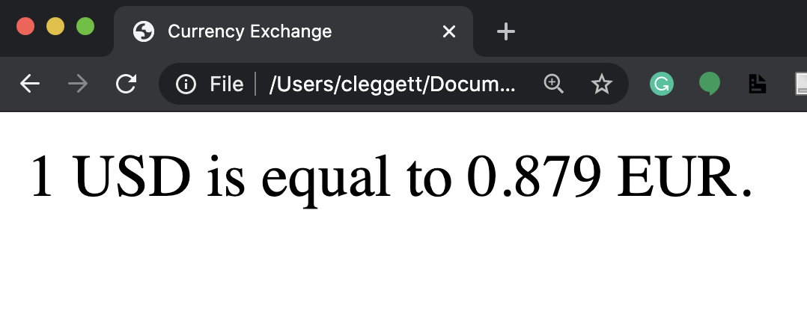
Now, let’s make the site a bit more interactive by allowing the user to choose which currency they would like to see. We’ll start by altering our HTML to allow the user to input a currency:
<!DOCTYPE html>
<html lang="en">
<head>
<title>Currency Exchange</title>
<script src="currency.js"></script>
</head>
<body>
<form>
<input id="currency" placeholder="Currency" type="text">
<input type="submit" value="Convert">
</form>
<div id="result"></div>
</body>
</html>
Now, we’ll make some changes to our JavaScript so it only changes when the form is submitted, and so it takes into account the user’s input. We’ll also add some error checking here:
document.addEventListener('DOMContentLoaded', function() {
document.querySelector('form').onsubmit = function() {
// Send a GET request to the URL
fetch('https://api.exchangeratesapi.io/latest?base=USD')
// Put response into json form
.then(response => response.json())
.then(data => {
// Get currency from user input and convert to upper case
const currency = document.querySelector('#currency').value.toUpperCase();
// Get rate from data
const rate = data.rates[currency];
// Check if currency is valid:
if (rate !== undefined) {
// Display exchange on the screen
document.querySelector('#result').innerHTML = `1 USD is equal to ${rate.toFixed(3)} ${currency}.`;
}
else {
// Display error on the screen
document.querySelector('#result').innerHTML = 'Invalid Currency.';
}
})
// Catch any errors and log them to the console
.catch(error => {
console.log('Error:', error);
});
// Prevent default submission
return false;
}
});
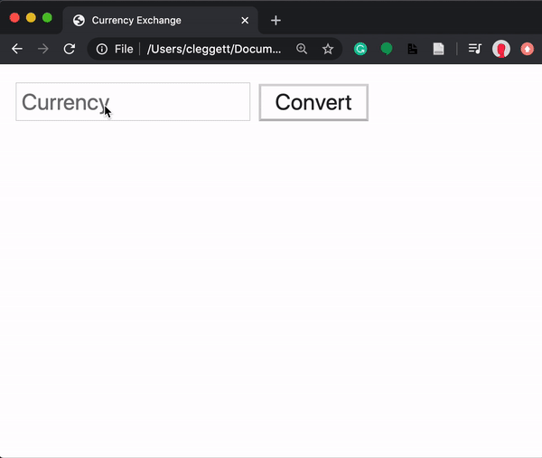
That’s all for this lecture! Next time, we’ll work on using JavaScript to create even more engaging user interfaces!